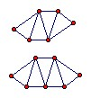

Show that for any n ≥ 6 we can find a convex hexagon which can be divided into n congruent triangles.
Solution
We use an isosceles trianglea as the unit. The diagram shows n = 4 and n = 5. We can get any n ≥ 4 by adding additional rhombi in the middle.


© John Scholes
jscholes@kalva.demon.co.uk
11 Apr 2002